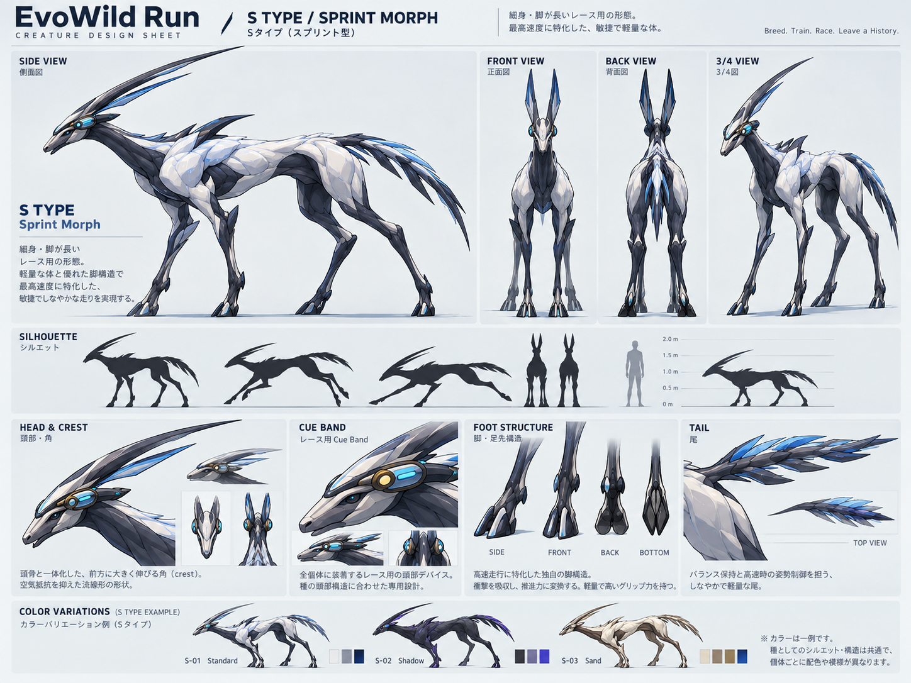

2.5D / HORIZONTAL CROSS SECTIONS
立体を、重ねる。
既存のS型と四足モーションを、水平断面だけで走らせる。
STYPE / SPRINT MORPH
既存の断面素材を読み込み中…
OVAL / 1600 m SOURCE— fps
S—01CANVAS 2D / 64 LAYERS / 24 FRAMES
0.0 m/sカメラ・操作設定
断面画像だけを描画。CanvasとWebGL積層では、実行時に元モデルのポリゴンを描画しません。GLBは比較専用です。
素材・比較条件と制約
D3-C v2の既存S型モデルと、肩甲骨・四肢・足裏IKを含む既存走行を使用。元GLBにテクスチャはないため無彩色を保持しています。陰影はクリーチャー基準の固定光をベイク。2D比較は同じモデルの16方向・35°ベイクで、既存2D方式と同じ画像描画を使います。元の本番2Dシートは素材が異なるため、同一素材比較とは別に記録しています。
モデルと元モーションは既にREVISE判定のレビュー素材です。このデモは造形や走行品質の承認を意味しません。実機モバイル計測とは区別して報告します。
